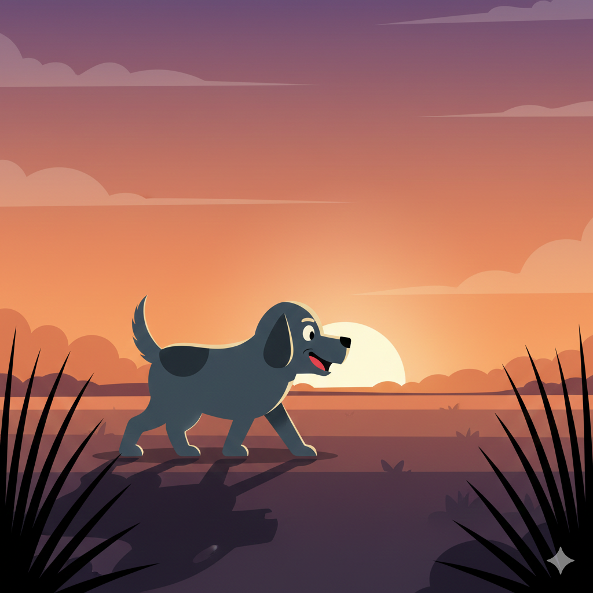

Jake comenzó a correr como cuando era joven. Sus patas golpeaban la tierra con una energía que parecía imposible.
El viento movía su pelaje mientras el sol descendía lentamente. Miku lo observaba, sintiendo una mezcla de felicidad y preocupación.
Jake no parecia querrer detenerse.
¿Qué debería hacer Miku?
